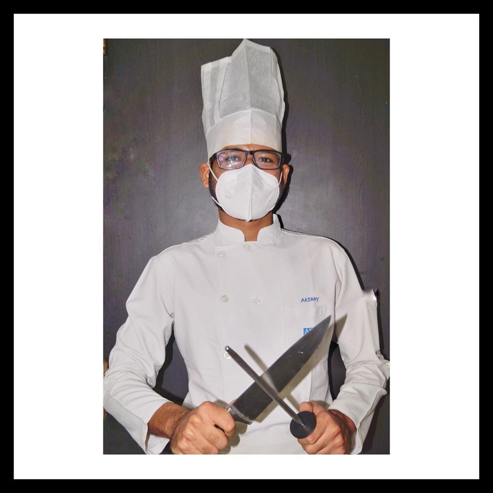
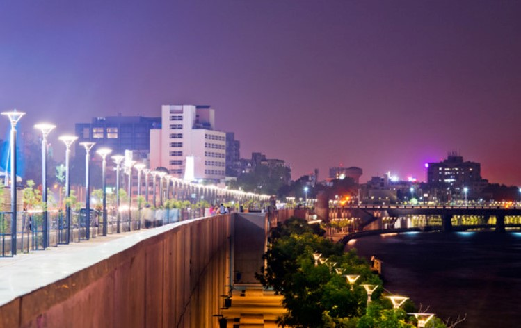

About
CHEF : Akshay Gajjar
It all started way back when I decided to go to Canada. During my training Hyatt Regency Ahmedabad, I had it in my mind that I'm going to open my small outlet no matter the cost! I had an amazing journey at Hyatt Regency because of this one chef who taught me the basics of kitchen as well as the Indian cuisine ! He very well taught me about the curries and the different spices used in Indian cooking. From that I came up with the idea of my little outlet which I was gonna open and that is "SEVEN SPICES". All because I use secret seven spices in my curries. Also during my training I found out that hygiene is the most important factor while cooking food so it always stays on top of my list! Moreover my plans got changed due to this deadly corona virus and again the safety of the people whom I feed is really important, so I came up with an idea to cook delicious food, served with utmost hygiene practices!
Where are we based?

Ahmedabad.
Ahmedabad is one of the largest city and former capital of Gujarat, Ahmedabad is also known as Amdavad. It is situated on the banks of the Sabarmati river, where the Mahatma Gandhi lived for twelve long years during
India’s freedom struggle, and mostly known for its tourist attractions. It is famous for its cotton textiles, street food places, diamond cutting, and much more. One of the biggest lakes in Ahmedabad, initially known as Hauz-E-Qutub, Kankaria
Lake. A great romantic place for couples to visit, as you would expect. It is best experienced when visited in the evening as you can enjoy the sunset on a boat. It is the fifth-largest city in India with a population of 6.5 million, and
India’s first UNESCO World Heritage City. Ahmedabad was ranked third on Forbes’s list of fastest-growing cities of the decade in 2010.
Precautions that we are taking :
Quality food prepared with safety, hygiene and care now delivered to your doorstep.
Four precautionary steps of my kitchen!
1) Santizing all the groceries and vegetables before cooking.
2) To always wear a mask
while I'm cooking.
3) Constantly washing hands after every 30 mins.
4) Cleaning surface repetitively.
5) Handpicking the vegetables daily and using the best quality of products as I can never compromise on the quality factor.
When are we open? How to order?
Time:
We are open from 5 P.M (IST) to 9 P.M (IST).
Order:
You can order through our website or by sending message on Instagram or calling us at +919898247125.